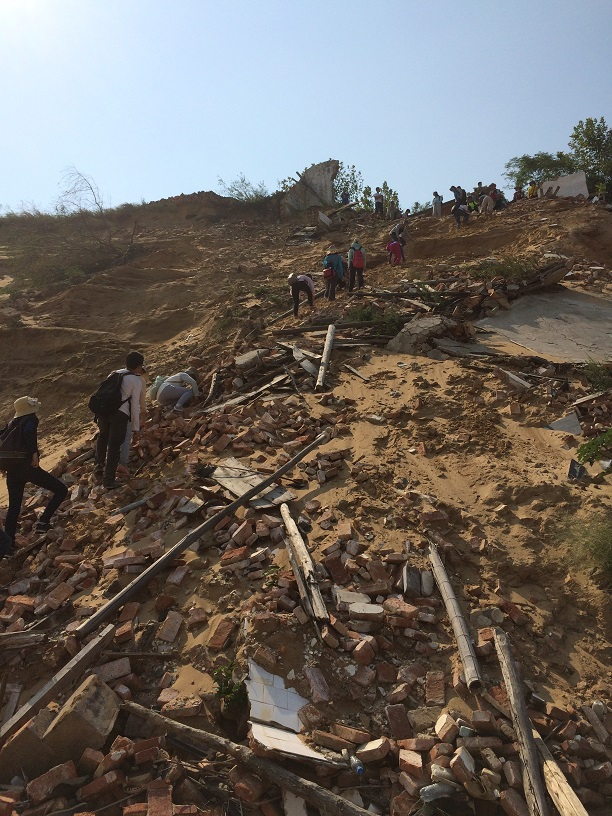
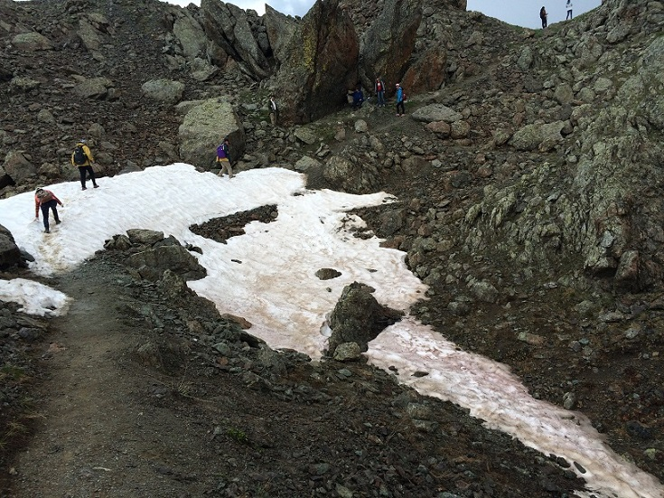

Home CV Research Academics Gallery Contact
Gallery
My origin of fieldwork: Saltmarsh cliff stability study, May 2015
 |
|
| RTK base station setup |
Over the tidal creek, (from left to
right) Liang, Tian, Dandan |
| Saltmarsh plants Upper: Spartina alterniflora Left: Spartina anglica Right: Suaeda salsa |
Saltmarsh edge cliff, a symbol of
coastal erosion |
Bio-geomorphological study of Spartina alterniflora saltmarshes, Jul-Aug 2015
 |
 |
| Dr. Wenjing Xie and me on the mudflat at 5:04 AM, July 29, 2015 | Counting Spartina in a quadrat |
 |
 |
| Splitting sediment core into bags | The after-work feast |
Practice of geographical sciences in Lushan Mountain, Sep 2015
With team members and our teacher, at
Lushan Building
 |
|
| The Wangjiapo slope | Lulin Lake |
| |
 |
| Soil profile at
Huanglong Temple (Alpine yellow soil) |
Climbing up a dune near Poyang Lake |
 |
 |
| Observation of paddy
soil in the cropland |
Flow measurement in Changchong
River |
| |
|
| Measuring dissolved
oxygen of water sample |
Me working on soil mapping |
 |
|
| Model of Lushan Church
in SketchUp |
Cross profiles of Changchong River |
Coral-reef dynamics study, Jan 2016
 |
|
| Wave breaking at the
front of sand spit |
Climbing up a dune to release the
drone |
| |
|
| Observing the beach
stratigraphy |
Coral collection |
| |
|
| Moving a fragment of
coral reef |
Remains of a jellyfish |
 |
 |
| Me picking up a gourd |
Mangrove habitat at Dongzhai Port Nature Reserve |
 |
|
| Ancient salt ponds |
Boulder deposits at Xiaodonghai,
Sanya |
Geological excursion in the Western Alps, Jul 2016
Group
photo at le Chenaillet, 2650m
 |
 |
| Mer de Glace near Mont
Blanc |
Basalt (indicating ancient
Liguro-piemontais Ocean) and glacier |
In situ sediment transport observation in South Yellow Sea, Aug 2016
 |
 |
| Practice of tripod setup |
Onboard tripod setup and instrument
deployment |
 |
 |
| Hoisting the tripod
from the moored site |
Back to Yangkou Port |
Thank you for your attention! Click here to scroll back to the top.